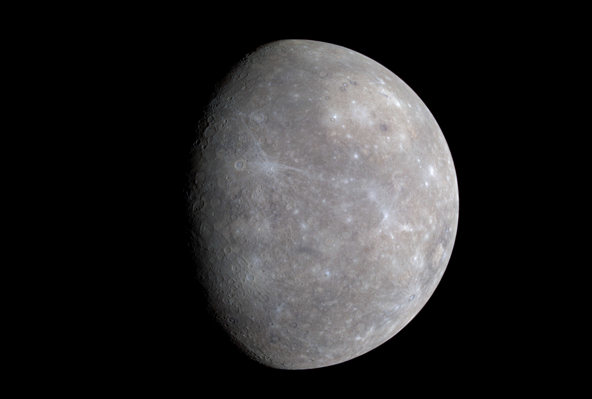

Mercúrio
O planeta mais próximo do Sol.

Mercúrio é o primeiro planeta do Sistema Solar, ou seja, ele é o mais próximo do Sol, está a 0,4 unidades astronômicas (1 unidade astronômica = 150 milhões de km) de distância da nossa estrela! Por este motivo, ele tem o período orbital mais rápido do nosso sistema, leva 88 dias terrestres para Mercúrio completar uma volta ao redor da nossa estrela, por este motivo, os romanos deram ao planeta o nome do mensageiro dos deuses, Mercúrio, por causa de sua órbita rápida. É como se o planeta estivesse sempre correndo em volta do Sol para entregar mensagens celestiais.
Apesar de girar rápido em torno do sol, ele gira lentamente em torno de si mesmo: um único dia em Mercúrio dura 176 dias na Terra! Isso significa que, se você estivesse em Mercúrio, veria o Sol nascer muito lentamente no horizonte e levar meses até ele se pôr.
Ele é o menor planeta do Sistema Solar, tem um raio de 2439,7 km e se assemelha a uma lua gigante, cheia de crateras. Isso acontece porque ele não tem atmosfera densa para proteger sua superfície dos impactos de meteoros. Ele é até considerado um planeta estéril, quando se trata de atmosfera. Ele é rochoso, sem oceanos, montanhas ou florestas, apenas uma vasta paisagem de tons acinzentados, cheia de rochas e poeira, sendo extremamente quente durante o dia, com temperaturas que podem passar de 430 °C, e congelante à noite, chegando a impressionantes -180 °C. Como pode ser tão quente e tão frio? A resposta está na ausência de uma atmosfera para reter o calor.
Mas de que Mercúrio é feito? Ele tem um núcleo gigante de ferro e níquel, que ocupa quase 85% do planeta. É como se ele fosse um núcleo ambulante! Esse núcleo é tão especial que gera um campo magnético, algo raro para planetas pequenos. O campo magnético de Mercúrio é fraco, mas ajuda a proteger sua superfície de algumas partículas solares.
Por Mercúrio estar muito próximo ao Sol, existe uma dificuldade gigante em explorar o planeta, no entanto, já enviamos sondas espaciais como a Mariner 10 a Messenger, e BepiColombo que passaram anos estudando o planeta. Elas nos mostraram detalhes incríveis, como o fato de Mercúrio ter gelo em algumas crateras nos polos, mesmo estando tão perto do Sol. Isso acontece porque essas regiões estão permanentemente na sombra.
A sonda Mariner 10, lançada em 1973 pela NASA, sobrevoou Mercúrio três vezes entre 1974 e 1975. Ela capturou as primeiras imagens detalhadas do planeta, descobriu sua superfície cheia de crateras e confirmou a existência de um campo magnético fraco. Décadas depois, a NASA enviou a Messenger, lançada em 2004, que entrou em órbita ao redor de Mercúrio em 2011. Durante quatro anos, essa missão mapeou toda a superfície do planeta, descobriu a presença de gelo em crateras polares que nunca recebem luz solar e analisou sua composição química e geológica. Atualmente, a missão BepiColombo, uma colaboração entre a Agência Espacial Europeia (ESA) e a Agência Japonesa de Exploração Aeroespacial (JAXA), está a caminho de Mercúrio. Lançada em 2018, ela deve chegar ao planeta em 2025 e será composta por duas sondas: uma para estudar a superfície e outra para analisar seu campo magnético.
| Composição | Raio Equatorial | Distância mínima à Terra | Distância ao Sol |
|---|---|---|---|
| 70% material metálico - 30% silicatos | 2.439,7 km | 77.300.000 km | 57.909.227 km |
| Inclinação Equatorial | Aceleração da Gravidade | Densidade | Descoberta |
| 0° | 3,7 m/s² | 5,427 g/cm³ | Antigos |